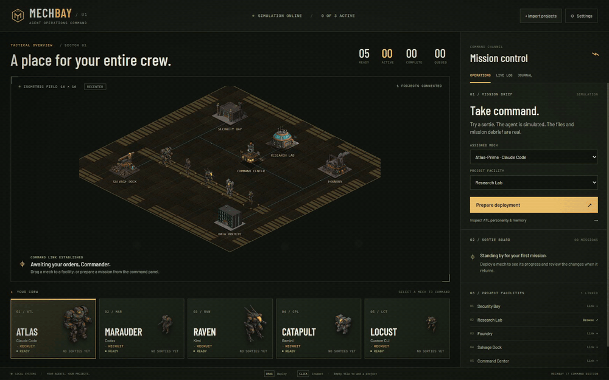
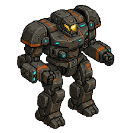
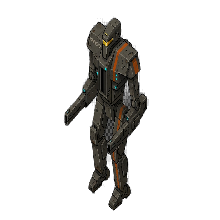
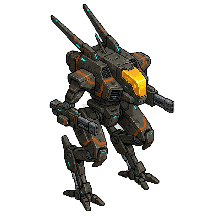
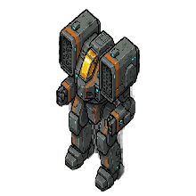
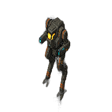
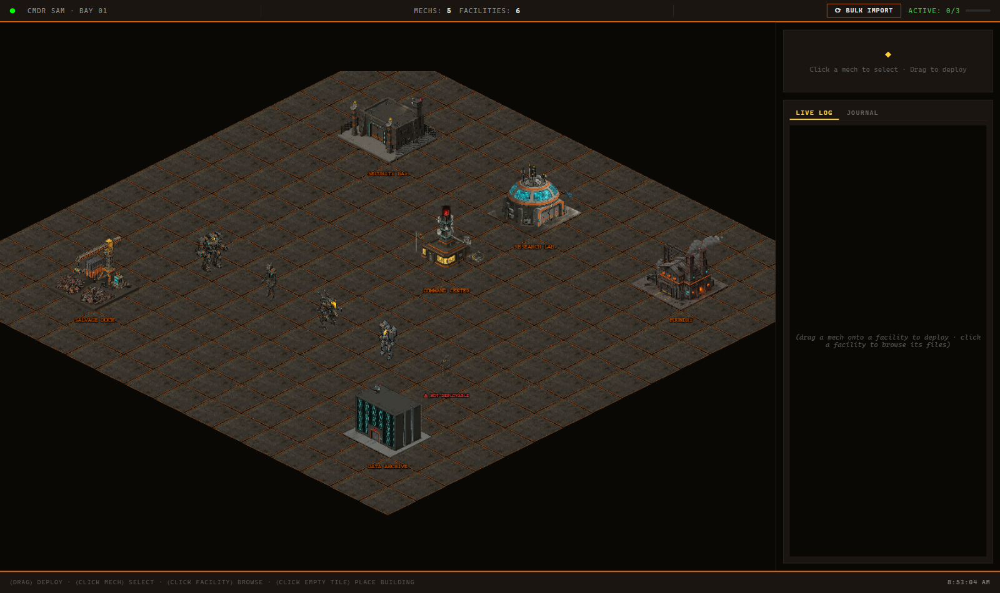

STEP 01
DEPLOY
Drag a mech onto a facility—a real project directory represented in the bay.
Command interface // Online
A BattleTech-inspired command bay for AI coding agents.
Five mechs. Real agents. Your projects are the battlefield.

Mission protocol
The isometric bay is the interface. Every deployment crosses the line into a real project, a real process, and a reviewable result.
Drag a mech onto a facility—a real project directory represented in the bay.
A real agent process launches in that directory while live output streams into the HUD.
The mech returns with a Mission Debrief, a real git diff, and new mission history written to memory.
Active chassis // 05
Each chassis has a specialty, a real runtime, and a persistent identity that travels from mission to mission.

Heavy assault
RUNTIME // Claude Code
Built to carry the heaviest missions and keep pushing when the codebase pushes back.

Surgical strike
RUNTIME // Codex
Precise, direct, and happiest when a difficult change needs a clean line through the noise.

Recon scout
RUNTIME // Kimi
Scans first, reports clearly, and streams ▸ INTENT / ◆ FINDINGS thought cards as it works.

Ranged multimodal
RUNTIME // Gemini
Brings long-range context and multimodal firepower to missions that extend beyond text.

Swarm courier
RUNTIME // Bring your own agent
Fast, adaptable, and ready to carry any CLI you bring through the same deployment loop.
Persistent context
These are not disposable chat tabs. Every mech carries a soul.md persona and a memory.md mission history into each deployment. The context compounds. The roster remembers what it tried, what worked, and what to check next time.
01 ## Mission — Reactor Control
02 - Facility: reactor-control
03 - Objective: survey + calibrate telemetry
04 - Edits: src/telemetry.ts, mission-report.md
05 - Result: clean diff, debrief filed
06 - Next time: check sensor thresholds firstSystem schematic
A desktop architecture designed to keep cinematic presentation separate from process execution—and every boundary inspectable.

Zero-key launch
Clone the repo and run the complete simulated deployment loop. No provider account, API key, or agent CLI required.
git clone https://github.com/samalbanese/mechbay.git
cd mechbay
npm install
npm run demoHave a real agent CLI? Launch the development bay with npm run dev.